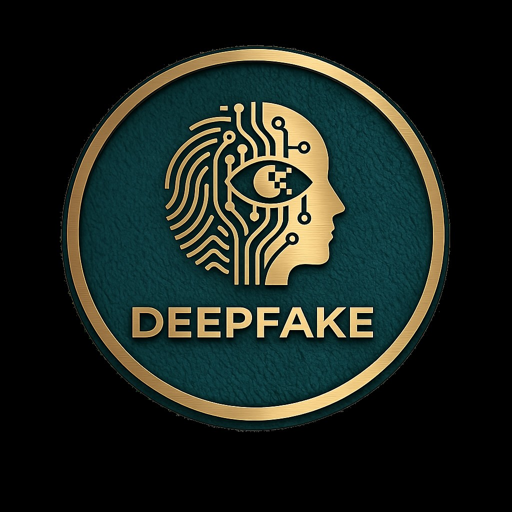

COMP501 - Computing Technology in SocietyThreats to Truth in the Digital Age
This website is our group research project for COMP501: Computing Technology in Society at Auckland University of Technology. Our topic is deepfakes and AI generated misinformation - a problem that sits at the intersection of technology, ethics, and democracy. Use the navigation bar above to explore each section of our research.
Deepfakes are synthetic media - videos, images, or audio clips - generated by artificial intelligence to make real people appear to say or do things they never actually did. Powered by deep learning techniques such as Generative Adversarial Networks (GANs), these fabrications have grown dramatically more convincing and far more accessible over the past decade. What was once an expensive, technically demanding process now requires little more than a smartphone and a short clip of the target person.
This project critically examines deepfakes and AI generated misinformation across four areas. We explain the technology - how GANs work, what types of synthetic media exist, and how the field has developed. We explore the genuine opportunities this technology presents in areas like film, healthcare, and accessibility, while being honest about the ethical conditions those opportunities depend on. We assess the well-documented risks: election interference, non-consensual intimate imagery, financial fraud, and the slow erosion of public trust in authentic media. And we evaluate the choices available to society - technical, legislative, and educational - arguing that no single response is sufficient on its own.
Throughout, we draw on Taiwan's 2024 presidential election as our central case study - one of the most thoroughly documented real-world examples of deepfakes being deployed in a political context. Our research draws on over ten peer-reviewed academic sources and aims to produce a balanced, evidence-based analysis of a technology that is already reshaping how people consume and trust information.